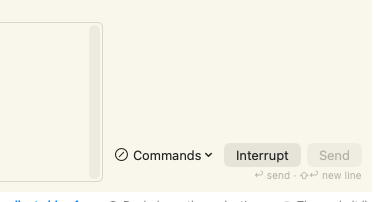

Every state the row has, today beside the proposal, in both appearances.
The proposal moves the controls to a full-width bar under the box. The fixed slot at the
right edge always holds the safe action — Send or Replace, never Interrupt — because Send
stays live while a turn runs: sending mid-turn queues the message (the held-queue
mechanism), so Send and Interrupt can be actionable at the same time. Interrupt is its own
bordered control that appears in the bar's empty middle while a turn runs, the way the held
chip appears on the left, so nothing the hand targets ever moves. Rationale, the premise
this revises, and the alternatives considered: input-pane-redesign.md beside
this file.
A working session: the one control wearing a "prohibited" glyph is the menu that works, the bordered button is the rare destructive action, and the disabled primary is the palest thing in the row.

The common resting state. Today Send is the flattest thing on screen; proposed, it is a filled slab even while disabled, so the primary stays visually primary.
today · light
proposed · light
today · dark
proposed · dark
Proposed, the primary lights in the accent the moment there is something to send — the strongest thing in the pane is now the action you are about to take.
today · light
proposed · light
today · dark
proposed · dark
Today a third button appears and the box narrows to make room. Proposed, Interrupt appears as its own bordered button in the bar's flexible middle; the slot keeps Send, dimmed because the box is empty, and the right edge is pixel-identical to every other state. With nothing typed, Interrupt is the only available action and reads as the strongest thing in the bar — that is honest hierarchy, not the inversion the operator screenshotted, because here it genuinely is the one thing you can do.
today · light
proposed · light
today · dark
proposed · dark
Sending while a turn runs is not refused — it queues the message. So Send and Interrupt are both legitimately actionable here, and the merged slot from the first pass showed only Interrupt: no Send button existed, and the position the hand knows as Send held a destructive control. Revised, both are buttons. The slot lights accent the moment there is text; Interrupt keeps the exact position it has in the empty-box frame above; and the hint sits between them as a buffer, so a click drifting left of Send lands on dead text rather than on the stop.
today · light
proposed · light
today · dark
proposed · dark
Everything at once — working, two held, new text typed — is the bar's fullest state, and the right edge still has not moved. Today the same state squeezes four controls beside the box.
today · working, 2 held, text typed
proposed · same state
Today a fourth button squeezes in and the box narrows again. Proposed, the held queue is a chip on the LEFT, growing into empty space — the right edge is pixel-identical to the typed-text state, so the hand's target has not moved. The ↑ names the existing pull-back key.
today · light
proposed · light
today · dark
proposed · dark
Today only the button's own label changing says you are in a different mode. Proposed, the chip turns accent and announces the mode, and the primary agrees with it — the rename reads deliberate rather than like a glitch.
today · light
proposed · light
today · dark
proposed · dark
The send key rides ON the button at full size instead of hiding in the caption; the caption keeps only the newline half. ⌘↩ stays bound under both preferences, unchanged.
today · light
proposed · light
today · dark
proposed · dark
The tempting middle: preserve the first pass's clean single-button working frame by letting the slot show Interrupt only while the box is empty, swapping back to Send once typing starts. The swap that springs the trap is not typing — it is Send itself. Clicking Send mid-turn queues the message and empties the box, so Interrupt materialises in the just-clicked position while the pointer is still on it; a double-click, or a second thought half a second later, stops the agent. The ~300 ms inert guard would have to return to defend the design's own primary action. Two frames, light only, one click apart, pointer unmoved.
the click — Send queues the message
half a second later — Interrupt under the unmoved pointer
Same icon fix, same key-on-the-button and safe-slot treatment, but the cluster stays to the right of the box, saving the bar's ~30 pt of height. Not recommended: the box still narrows when the held chip appears, and the composer never gets the full pane width. Two states, light only, to show the residual jump.
option b · typed text
option b · 2 held — the box narrows again
The Commands glyph is SF Symbol terminal — a command prompt (a
> and a text-cursor underscore in a rounded rectangle), the place commands are
typed. The current slash.circle is the prohibited mark. The Interrupt glyph is
stop.fill. Both honour the text-scale preference like any SF Symbol.
The primary slot is fixed at the width of its widest label and only ever reads Send or Replace — both safe, so no morph needs an inert guard, and the first pass's ~300 ms guard is deleted. Interrupt never enters the slot: it is its own control, appearing and disappearing with the working phase in the bar's flexible middle, in one fixed position, with the hint between it and the slot as a buffer. While working, bare ↩ (or ⌘↩) and the Send button both queue the message — the chip on the left counts what is held.
Colours here approximate the shipped light chrome and the house dark palette; the implementation draws from the shared design tokens and the system appearance as always.